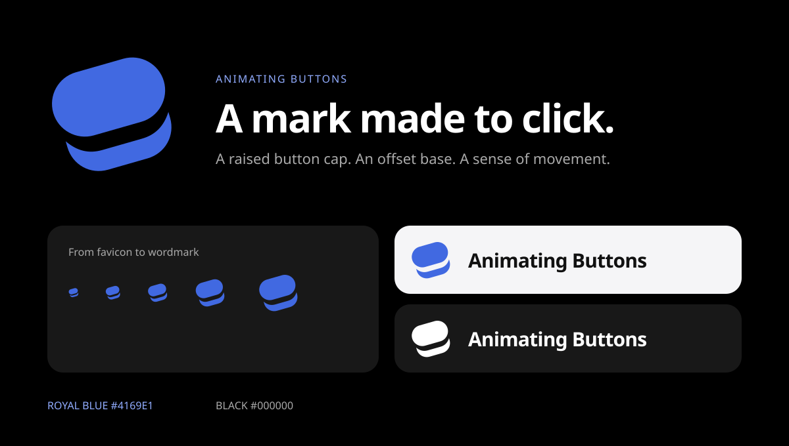

A mark made to click.
The royal-blue press symbol pairs a rounded button cap with an offset base. Two shapes, a little movement, and a clear silhouette at every size.

The royal-blue press symbol pairs a rounded button cap with an offset base. Two shapes, a little movement, and a clear silhouette at every size.
